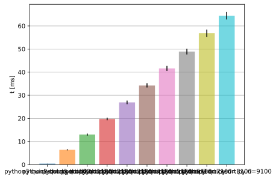
executed 10 benchmarks:
performed comparisons:
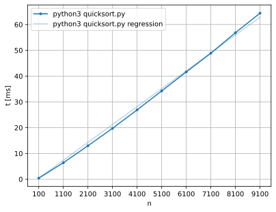
made regression against parameter n
parameter values:
lowest time 429.6 μs with n=100
hightest time 64.41 ms with n=9100
estimated complexity: linear (O(N))
R^2 1.00
linear coef 6.938 μs
python3 quicksort.py n=100 is fastest, used as reference in comparisons
| python3 quicksort.py n=1100 | python3 quicksort.py n=2100 | python3 quicksort.py n=3100 | python3 quicksort.py n=4100 | python3 quicksort.py n=5100 | python3 quicksort.py n=6100 | python3 quicksort.py n=7100 | python3 quicksort.py n=8100 | python3 quicksort.py n=9100 | |
|---|---|---|---|---|---|---|---|---|---|
| python3 quicksort.py n=100 | comparison | comparison | comparison | comparison | comparison | comparison | comparison | comparison | comparison |
| python3 quicksort.py n=100 | python3 quicksort.py n=1100 | |
|---|---|---|
| mean | 429.6 μs | 6.401 ms |
| st dev | 21.55 μs | 218.8 μs |
python3 quicksort.py n=100 is 14.899 ± 0.904 times faster than python3 quicksort.py n=1100
1389.94% speedup
Mann-Whitney U-test:
p-value: 0.00
p-value < 0.05 ⇒ assuming distribution is different
| python3 quicksort.py n=100 | python3 quicksort.py n=2100 | |
|---|---|---|
| mean | 429.6 μs | 12.98 ms |
| st dev | 21.55 μs | 464.4 μs |
python3 quicksort.py n=100 is 30.223 ± 1.862 times faster than python3 quicksort.py n=2100
2922.26% speedup
Mann-Whitney U-test:
p-value: 0.00
p-value < 0.05 ⇒ assuming distribution is different
| python3 quicksort.py n=100 | python3 quicksort.py n=3100 | |
|---|---|---|
| mean | 429.6 μs | 19.75 ms |
| st dev | 21.55 μs | 517.5 μs |
python3 quicksort.py n=100 is 45.969 ± 2.601 times faster than python3 quicksort.py n=3100
4496.89% speedup
Mann-Whitney U-test:
p-value: 0.00
p-value < 0.05 ⇒ assuming distribution is different
| python3 quicksort.py n=100 | python3 quicksort.py n=4100 | |
|---|---|---|
| mean | 429.6 μs | 26.90 ms |
| st dev | 21.55 μs | 824.3 μs |
python3 quicksort.py n=100 is 62.613 ± 3.680 times faster than python3 quicksort.py n=4100
6161.28% speedup
Mann-Whitney U-test:
p-value: 0.00
p-value < 0.05 ⇒ assuming distribution is different
| python3 quicksort.py n=100 | python3 quicksort.py n=5100 | |
|---|---|---|
| mean | 429.6 μs | 34.25 ms |
| st dev | 21.55 μs | 914.2 μs |
python3 quicksort.py n=100 is 79.716 ± 4.529 times faster than python3 quicksort.py n=5100
7871.60% speedup
Mann-Whitney U-test:
p-value: 0.00
p-value < 0.05 ⇒ assuming distribution is different
| python3 quicksort.py n=100 | python3 quicksort.py n=6100 | |
|---|---|---|
| mean | 429.6 μs | 41.61 ms |
| st dev | 21.55 μs | 1.115 ms |
python3 quicksort.py n=100 is 96.863 ± 5.507 times faster than python3 quicksort.py n=6100
9586.27% speedup
Mann-Whitney U-test:
p-value: 0.00
p-value < 0.05 ⇒ assuming distribution is different
| python3 quicksort.py n=100 | python3 quicksort.py n=7100 | |
|---|---|---|
| mean | 429.6 μs | 48.88 ms |
| st dev | 21.55 μs | 1.260 ms |
python3 quicksort.py n=100 is 113.780 ± 6.415 times faster than python3 quicksort.py n=7100
11278.02% speedup
Mann-Whitney U-test:
p-value: 0.00
p-value < 0.05 ⇒ assuming distribution is different
| python3 quicksort.py n=100 | python3 quicksort.py n=8100 | |
|---|---|---|
| mean | 429.6 μs | 56.83 ms |
| st dev | 21.55 μs | 1.561 ms |
python3 quicksort.py n=100 is 132.283 ± 7.564 times faster than python3 quicksort.py n=8100
13128.32% speedup
Mann-Whitney U-test:
p-value: 0.00
p-value < 0.05 ⇒ assuming distribution is different
| python3 quicksort.py n=100 | python3 quicksort.py n=9100 | |
|---|---|---|
| mean | 429.6 μs | 64.41 ms |
| st dev | 21.55 μs | 1.624 ms |
python3 quicksort.py n=100 is 149.910 ± 8.414 times faster than python3 quicksort.py n=9100
14891.02% speedup
Mann-Whitney U-test:
p-value: 0.00
p-value < 0.05 ⇒ assuming distribution is different
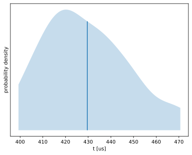
259 runs
| min | median | max |
|---|---|---|
| 376.6 μs | 426.6 μs | 507.8 μs |
| p1 | p5 | p25 | p75 | p95 | p99 |
|---|---|---|---|---|---|
| 383.5 μs | 400.3 μs | 414.2 μs | 442.8 μs | 469.6 μs | 492.0 μs |
| lower bound | estimate | upper bound | |
|---|---|---|---|
| mean | 427.1 μs | 429.6 μs | 432.3 μs |
| st dev | 19.36 μs | 21.55 μs | 23.56 μs |
found 4 outliers (1.54%):
outlying measurements have severe (71.0%) effect on estimated standard deviation
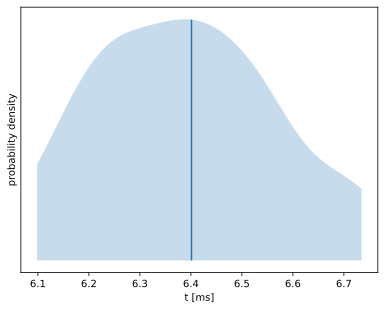
193 runs
| min | median | max |
|---|---|---|
| 5.903 ms | 6.387 ms | 7.443 ms |
| p1 | p5 | p25 | p75 | p95 | p99 |
|---|---|---|---|---|---|
| 5.923 ms | 6.099 ms | 6.251 ms | 6.534 ms | 6.734 ms | 7.223 ms |
| lower bound | estimate | upper bound | |
|---|---|---|---|
| mean | 6.372 ms | 6.401 ms | 6.432 ms |
| st dev | 185.9 μs | 218.8 μs | 251.9 μs |
found 3 outliers (1.55%):
outlying measurements have moderate (45.1%) effect on estimated standard deviation
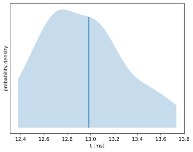
152 runs
| min | median | max |
|---|---|---|
| 12.17 ms | 12.92 ms | 15.08 ms |
| p1 | p5 | p25 | p75 | p95 | p99 |
|---|---|---|---|---|---|
| 12.21 ms | 12.38 ms | 12.69 ms | 13.21 ms | 13.73 ms | 14.67 ms |
| lower bound | estimate | upper bound | |
|---|---|---|---|
| mean | 12.91 ms | 12.98 ms | 13.06 ms |
| st dev | 379.6 μs | 464.4 μs | 546.0 μs |
found 5 outliers (3.29%):
outlying measurements have moderate (41.9%) effect on estimated standard deviation
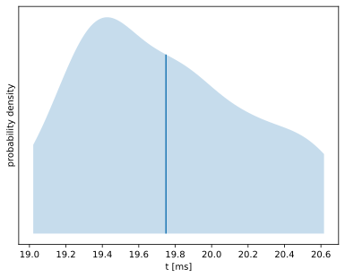
126 runs
| min | median | max |
|---|---|---|
| 18.71 ms | 19.71 ms | 21.33 ms |
| p1 | p5 | p25 | p75 | p95 | p99 |
|---|---|---|---|---|---|
| 18.71 ms | 19.02 ms | 19.35 ms | 20.14 ms | 20.62 ms | 20.84 ms |
| lower bound | estimate | upper bound | |
|---|---|---|---|
| mean | 19.65 ms | 19.75 ms | 19.83 ms |
| st dev | 461.0 μs | 517.5 μs | 576.3 μs |
outlying measurements have moderate (24.2%) effect on estimated standard deviation
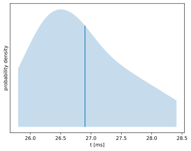
106 runs
| min | median | max |
|---|---|---|
| 25.60 ms | 26.73 ms | 29.78 ms |
| p1 | p5 | p25 | p75 | p95 | p99 |
|---|---|---|---|---|---|
| 25.61 ms | 25.80 ms | 26.28 ms | 27.40 ms | 28.41 ms | 29.09 ms |
| lower bound | estimate | upper bound | |
|---|---|---|---|
| mean | 26.74 ms | 26.90 ms | 27.06 ms |
| st dev | 693.7 μs | 824.3 μs | 940.7 μs |
found 2 outliers (1.89%):
outlying measurements have moderate (27.0%) effect on estimated standard deviation
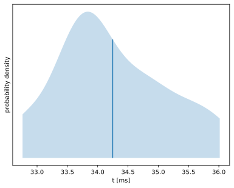
91 runs
| min | median | max |
|---|---|---|
| 32.66 ms | 34.03 ms | 36.27 ms |
| p1 | p5 | p25 | p75 | p95 | p99 |
|---|---|---|---|---|---|
| 32.66 ms | 32.76 ms | 33.60 ms | 34.91 ms | 36.01 ms | 36.27 ms |
| lower bound | estimate | upper bound | |
|---|---|---|---|
| mean | 34.05 ms | 34.25 ms | 34.43 ms |
| st dev | 788.0 μs | 914.2 μs | 1.015 ms |
outlying measurements have moderate (19.8%) effect on estimated standard deviation
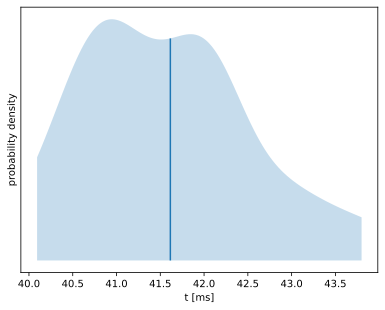
80 runs
| min | median | max |
|---|---|---|
| 39.00 ms | 41.56 ms | 45.49 ms |
| p1 | p5 | p25 | p75 | p95 | p99 |
|---|---|---|---|---|---|
| 39.00 ms | 40.09 ms | 40.80 ms | 42.19 ms | 43.80 ms | 45.49 ms |
| lower bound | estimate | upper bound | |
|---|---|---|---|
| mean | 41.38 ms | 41.61 ms | 41.86 ms |
| st dev | 894.0 μs | 1.115 ms | 1.310 ms |
found 1 outliers (1.25%):
outlying measurements have moderate (17.8%) effect on estimated standard deviation
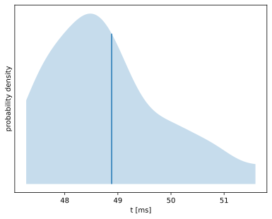
72 runs
| min | median | max |
|---|---|---|
| 46.88 ms | 48.65 ms | 52.88 ms |
| p1 | p5 | p25 | p75 | p95 | p99 |
|---|---|---|---|---|---|
| 46.88 ms | 47.28 ms | 48.08 ms | 49.53 ms | 51.59 ms | 52.88 ms |
| lower bound | estimate | upper bound | |
|---|---|---|---|
| mean | 48.61 ms | 48.88 ms | 49.20 ms |
| st dev | 993.5 μs | 1.260 ms | 1.481 ms |
found 3 outliers (4.17%):
outlying measurements have moderate (15.8%) effect on estimated standard deviation
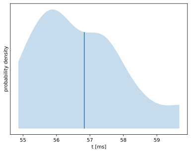
64 runs
| min | median | max |
|---|---|---|
| 54.68 ms | 56.50 ms | 62.30 ms |
| p1 | p5 | p25 | p75 | p95 | p99 |
|---|---|---|---|---|---|
| 54.68 ms | 54.86 ms | 55.73 ms | 57.53 ms | 59.67 ms | 62.30 ms |
| lower bound | estimate | upper bound | |
|---|---|---|---|
| mean | 56.45 ms | 56.83 ms | 57.20 ms |
| st dev | 1.208 ms | 1.561 ms | 1.887 ms |
found 3 outliers (4.69%):
outlying measurements have moderate (14.8%) effect on estimated standard deviation
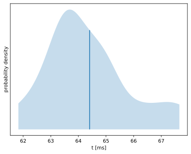
59 runs
| min | median | max |
|---|---|---|
| 61.48 ms | 63.91 ms | 68.60 ms |
| p1 | p5 | p25 | p75 | p95 | p99 |
|---|---|---|---|---|---|
| 61.48 ms | 61.83 ms | 63.32 ms | 65.13 ms | 67.66 ms | 68.60 ms |
| lower bound | estimate | upper bound | |
|---|---|---|---|
| mean | 64.00 ms | 64.41 ms | 64.81 ms |
| st dev | 1.269 ms | 1.624 ms | 1.884 ms |
found 2 outliers (3.39%):
outlying measurements have moderate (12.8%) effect on estimated standard deviation